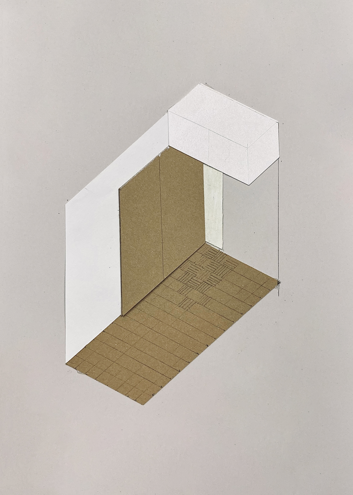
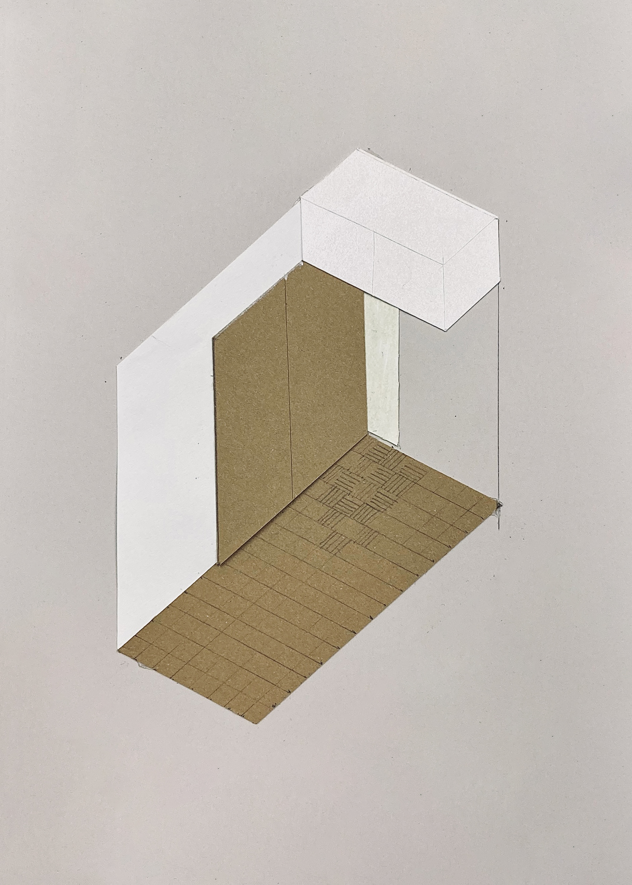

Renowacja mieszkania Zofii
Koncepcja renowacji mieszkania w wielkiej płycie, w Warszawie, niedaleko Królikarni. O projekt poprosiła mnie Zofia, która chce tuż po remoncie podarować mieszkanie swojemu pierworodnemu.

 

W trakcie rysowania koncepcji zdecydowaliśmy się zachować oryginalne drewniane klepki podłogowe oraz poprzesuwać ściany wewnętrzne, w taki sposób, żeby pomieścić więcej dużych szaf na ciuchy i bibeloty.
Reszta ma zapełnić się sama.

- Współpraca:
(konstrukcje) - Warszawa, 2019–20
- Projekt zrealizowany
- Lista projektów